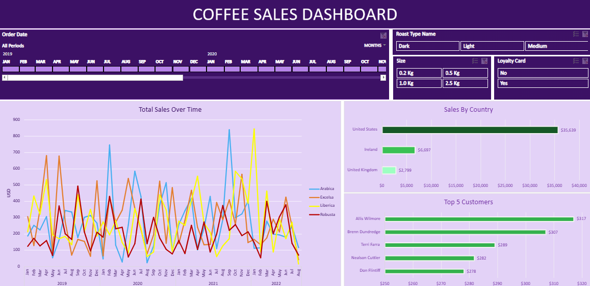

In this project I cleaned the data in Excel, populated tables with data from multiple other tables using xlookup and index, created pivot tables,
created pivot charts and slicers and finally created a Dashboard for coffee sales with filters for date, coffee type, coffee size


In this project I cleaned the data for Nashvill Housing in SQL server using variety of different statements.
The different feature of sql that I applied in this project are
SELECT, FROM, WHERE, JOINS, FUNCTIONS like CONVERT, ROW_NUM, CTE, UPDATE, DELETE, ALTER, CREATE and more.
In this project I used a rating data set for aircrafts and added a data set of locations to create a dashbaord
for aircrafts and their rating. I created multiple calcualted fields and parameters to use them as filters for the dashboard

In this project I used a Data set from Github which provided multiple tables for paintings
and museums which are related to the paintings. I used variety of SQL statements to retrieve data.
I used Key words such as CTE, SubQuery, JOINS, Temp Tables, Windows Functions
DELETE, INSERT, CREATE, ALTER and more to efficiently retrieve the
desired data.
In this Project I created a Database for the famous American tv series where I created proper tables
for every Monument, episode, season, segment and other tables which would help anyone who wants to know more
about any of the monument in the series.
NOTE: I only inserted a few episodes into the database, the database does not contain the whole series.